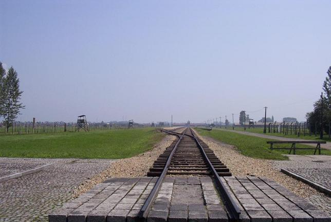

This extermination center and concentration camp was literally the “end of the line” for most of the victims shipped to the complex known as Auschwitz. Birkenau was built to hold almost 100,000 prisoners, as opposed to some 20,000 at Auschwitz I, and to kill and dispose of tens of thousands of people per day. When Jews arrived here by train, they were forced to stand in two lines: one for men, the other for women and children. SS officers, including the abominable Dr. Joseph Mengele, would then separate the people into two groups: a majority which would be sent to their immediate death, and a minority which would join the ranks of prisoners for the purpose of slave labor. Most of the latter would die of starvation, exhaustion and disease within just a few months.

Birkenau: The Camp, Part 1
Birkenau: The Camp, Part 2
Birkenau: Living Conditions
Birkenau: Ruins of a Crematorium and Gas Chamber
Birkenau: Memorial Plaque
Back to the Auschwitz-Birkenau Page
Back to the Homepage